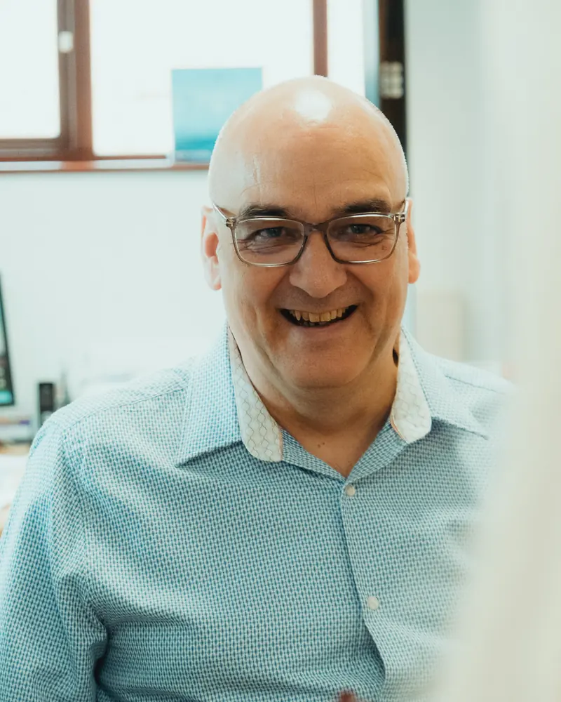
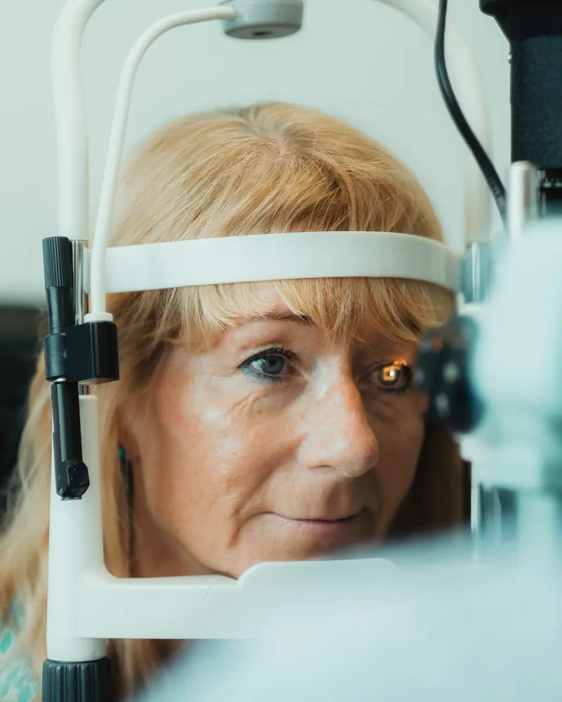
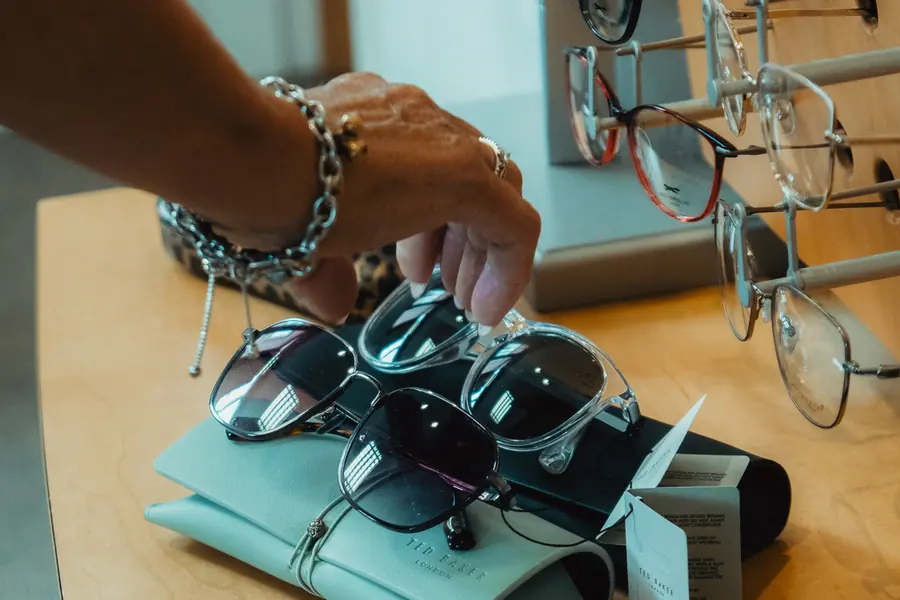

Digital marketing for independent opticians
It built your practice. It will not fill it. I handle the marketing that does, for independent opticians, so you can stay in the testing room.
Opens an email. Tell me your practice and your town and I will send times. I will have been through your Google listing before we speak.

Spring View Marketing runs the marketing for independent opticians across the UK, for practices that have grown on word of mouth and now have gaps in the appointment book. Original photography shot inside your practice, social content, a monthly blog article, a patient email, weekly Google Business Profile updates and every review answered. £750 a month, monthly rolling. One practice per catchment area.
Your patients like you. They say so at the desk, and they tell their friends, and that is genuinely how the practice got to where it is.
It is also why there are gaps in next week's diary.
Word of mouth only ever reaches people who already know somebody who knows you. It does not reach the family who moved into your catchment in March. It does not reach the person who has just been let down somewhere else and is, right now, typing "opticians near me" into their phone. And it is completely invisible to Google, which is where that person is looking.
Meanwhile it is Friday afternoon and nothing has gone out on Facebook again. The last post was a frame graphic the rep sent over and it got two likes. There are reviews on your Google profile from six months ago that nobody has answered. The blog has not been touched since the site was built, assuming there is a blog at all.
None of that is because you are bad at your job. You are in the testing room all day. Marketing is the thing that happens when there is time, and there is never any time.
What does an empty chair actually cost you?
An empty slot does not cost you nothing. The lights are on, the rent is paid, and your optometrist is paid either way. Every fixed cost in that building runs whether somebody is in the chair or not, which is what makes the empty ones so expensive.
Censuswide surveyed a thousand UK adults who wear glasses or contact lenses on behalf of Optegra. Across a lifetime they buy 26 pairs of spectacles totalling £3,878, and see an optician roughly every 1.2 years. That works out at about £149 a pair, before you add the sight test, the contact lenses, or the rest of their family.
So the gap in Tuesday's diary is not a quiet afternoon. It is £149 of dispensing you will not get back, from somebody who will now spend the next twenty years going somewhere else.
And here is the part that stings. At the moment they went looking, the other practice was simply the one they could find.
Optegra / Censuswide, January 2019, 1,000 UK adults with existing vision correction, reported by the Association of Optometrists. £149 is £3,878 divided by 26 pairs.

Three steps, and two of them are mine.
Before we speak I go through your Google listing, your social accounts and your website. On the call I tell you what is wrong with them. You get that whether you sign up or not.
An hour on site with a real camera. Your team, your frames, your testing room, your shopfront. Twenty five to thirty usable images, which is enough to fuel three months of content, and you keep every one of them permanently.
I produce it, you approve it, it publishes. Under an hour of your time a month. At the end of each month you get one page of numbers showing what moved.
Then start with the first part of it. Tell me your practice name and your town and I will send you the three things costing you the most patients right now, checked by hand rather than run through a tool, free, within two working days. No call needed, and no obligation afterwards.
Five things, every month, for as long as we work together. All of it built on photographs I took inside your practice.
Eight posts a month across Facebook and Instagram, made from your photographs. No manufacturer graphics, no stock, no AI images, ever. Carousels where they earn their place, because they still out-engage single images by roughly half again.
One article a month, around 2,000 words, written to rank in your area and structured so that Google's AI answers and ChatGPT can lift a clean answer out of it. After a year that is twelve pages working for you around the clock.
One email a month to your list. The cheapest revenue in the building is the patient who is already yours and has simply forgotten to rebook.
Updated weekly rather than monthly. It takes ten minutes and freshness is a ranking signal. For a single site practice the map pack sends more enquiries than the website does.
Good and bad, within days, alongside an ongoing push for new ones. Review velocity beats review count: fifty reviews with three this week will outrank two hundred with nothing since spring.
That is what changes. The specification, if you would rather see it in plain units: 8 social posts, 1 blog article, 1 patient email, 4 Google Business Profile updates, every review answered, and a one page report. Every month, on the same day each month.

£2,050 a month, at published UK rates, before anyone has set foot in your practice.
| What | Who you would buy it from | Published UK rate |
|---|---|---|
| Eight social posts from original photography | Content-led social agency | £900 to £2,000 /mo |
| One 2,000 word SEO article | Freelance SEO writer | £200 to £400 |
| One patient email | Freelance email copywriter | £150 |
| Google Business Profile management | Local SEO specialist | £300 to £500 /mo |
| Review management and responses | Reputation service | £200 to £500 /mo |
| Monthly reporting | Usually charged on top | £100 |
| Taking the bottom of every range | £2,050 a month |
Rates compiled from published UK 2026 price guides and rate cards. Sources at the foot of this page.
That is five suppliers, five invoices, and five people who have never met you. You would still be the one taking the photographs.
Five things I build once, that carry on working long after I have built them. They come with month one and they are yours to keep, including if you walk away at the end of it.
Before anything else I go through the public record of your practice and write up what a patient actually finds. Not a template audit with a traffic light on it. The last one I wrote found a practice's own name returning a competitor group's booking page listing eleven other branches, an NHS record published three weeks earlier carrying the wrong phone number, and nine directories still trading under the previous owner's name. Every line checked the same day, with the URL, so you can go and look yourself.
Your team already know they should ask. Asking is the awkward part. You get the words, for the dispense desk, the collection call and the follow-up text. A printed prompt card for the counter carrying the direct review link, the one that opens the review box rather than the listing. And the framework that gets a patient past the blank box and gets your service and your town named in the review text, which is what actually moves you up the map pack. Everybody gets asked and nobody gets filtered out. Gating reviews is against the law here now, and I will not do it.
I go back through your last two years and pull the list of patients who are overdue and have never been chased, then write the sequence that goes out to them. One practice ran this against 800 lapsed patients and got 11% of them back through the door inside 90 days. That is roughly 88 appointments out of records they already held. This is usually the fastest way to fill next month's gaps.
What your receptionist says when somebody rings and asks how much an eye test is, so the call ends in a booking rather than a price comparison. What to say at the desk to pre-appoint the next visit, which is the cheapest retention there is. And how to ask whether the partner and the children are due as well, which practice owners consistently rate the easiest referral available to them.
The hour on site. Twenty five to thirty edited images across your people, your practice, your frames and your shopfront, with a full commercial licence, kept permanently. A UK half day brand shoot runs £430 to £650 before licensing.
That is £2,000 of one-off work, in a month that costs you £250 and is refundable in full.
Cheaper than an agency, and you are not the one taking the photographs.
| Doing it yourself | A general agency | Spring View | |
|---|---|---|---|
| Monthly cost | Free, plus your evenings | £1,250 to £3,500 | £750 |
| Who takes the photographs | You, on a phone | You do. They ask you to send them over. | I visit and shoot it properly |
| Who writes it | You, on a Friday night | A junior who has never met you | Me. Only me. |
| Knows the optical sector | Yes | No | Yes |
| Works with your local competitor | Not applicable | Probably | Never |
| Minimum term | Not applicable | 6 to 12 months | None |
| Time it costs you | All of it | Chasing them for content | Under an hour a month |
Published UK rate cards put managed social posting at £500 to £1,000 a month when you supply the images, and £1,000 to £2,000 when the agency creates the content itself. Supplying the images is the hard part. That is the part I do.
What happens if it does not work?
£250 covers the photography visit, all five of the one-off builds above, and a full month of content. If you get to the end of it and decide it is not for you, say so and I refund the £250. You keep every photograph and every document. Worst case, you got a month of marketing and a professional photo library of your own practice for nothing.
Everything ships on the day it is due, every month. If a month's content is late because of me, that month costs you nothing. I am one person, so this is a promise I can actually keep, and it is the one that matters: the most common complaint about a marketing agency is not that the work was bad, it is that they went quiet.
Monthly rolling. Cancel by text and the next invoice does not go out. There is nothing to sign and nothing to give notice on.
A number of new patients. Anybody putting a figure on that from month one is guessing, and the advertising rules would require them to substantiate it. What I will do is move the things that lead to patients, and show you the movement every month against a baseline I captured before I started.
No. One independent practice per city or catchment area, and while we are working together I turn your competitors down. That is a large part of the reason the price is what it is: when I take your practice on, I stop selling to everybody else in your patch. If your area is already taken I will tell you on the first call rather than waste fifteen minutes of your time.
Because most of what you have been quoted asks you to supply the photographs and the video, which is the part that takes the time. Published UK rates put content-led social media, where the agency actually creates the material, at £1,000 to £2,000 a month, and that is before the blog, the emails, the Google profile and the reviews. £750 covers all of it, from one person, with your competitors locked out. At an average £149 a pair, £750 a month is a little over one extra patient a week.
Then this is the wrong month to start, and I will say so on the call. Once a practice is running at capacity the job changes from filling slots to raising what each one is worth, which means recall, second pairs, and being visible to the patients who want a thorough examination rather than the cheapest one. The same system does that, but the argument for it is different and I would rather have that conversation honestly.
Under an hour a month. One photography visit at the start, then a short check-in and approving content before it goes live. If you would rather be entirely hands off, that works too.
I do. I use AI the way you use an autorefractor: it gets me a starting point quickly, and then somebody who knows the subject checks it, corrects it and makes the call. Nothing reaches you that I have not rewritten and fact-checked, every health claim is traced to a real source before it goes anywhere near your name, and there are no AI-generated images at any point. That last one is not negotiable, because authentic photography is the entire point of this.
It will move the things that lead to patients, and those are the things I report on: review count and rating, local search visibility, and engagement. Expect the first signals in two to three months and steadier movement by month six. Review count is the number most likely to move visibly in the first month.
No. Monthly rolling, no notice period, and the first month is refundable in full.
Almost certainly not. Your highest value patients, the varifocal and dry eye and cataract referrals, are on Facebook. That is where the effort goes, with Instagram second.
Then you probably already know whether it is working. If you are still the one supplying the photographs and the captions, you are paying somebody to do the easy half.
Only with their written consent, in writing, every time. Most of the content features your team and your practice rather than patients.
Yes. Replying well to a negative review persuades the next reader more than the original complaint deters them. What I will not do is filter who gets asked, or offer anything in exchange for a review. Both breach Google's policy and UK consumer law, and the CMA enforces it.
Yes, across the UK. The photography visit means I travel to you.
A little over one extra patient a week.
Your first month is £250. That covers the photography visit, all five of the one-off builds, and a full month of content. If it is not for you at the end of it, I refund the £250 and you keep everything.
£750 a month after that. No contract, no notice period, cancel by text. That is £9,000 a year, and at £149 a pair it pays for itself on a little over one extra patient a week. Everything past that is yours, and so is every time they come back for the next twenty years.
One practice per catchment area. If yours is already taken I will say so on the call rather than waste your time.
Or email tom@springviewmarketing.co.uk directly, or ring 07846 363341. I answer everything myself. Not ready to talk? Ask for the free visibility check instead.
£750 a month. First month £250, refundable.
Book a 15 minute call